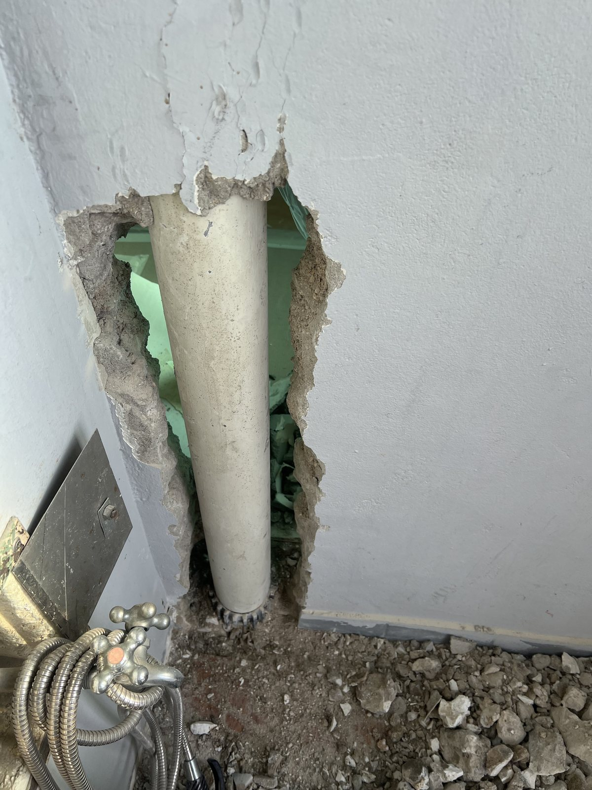
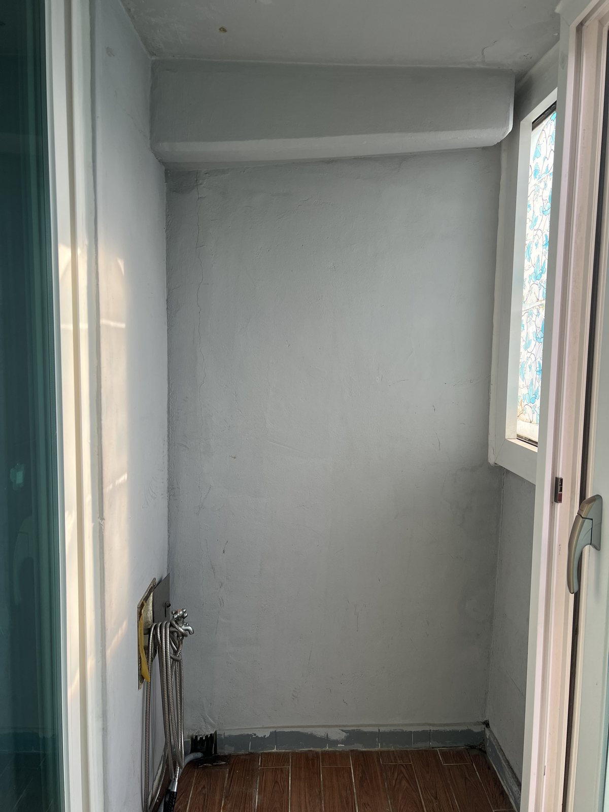
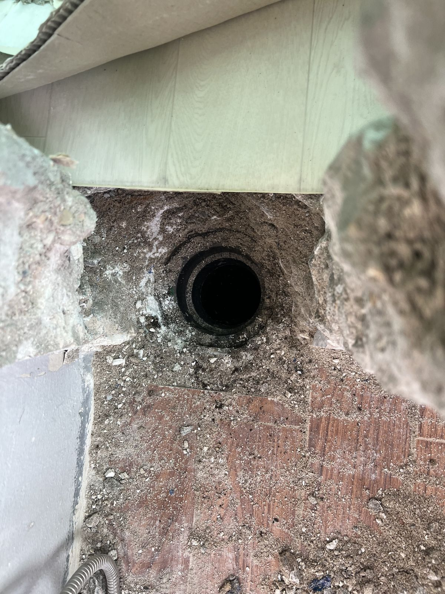
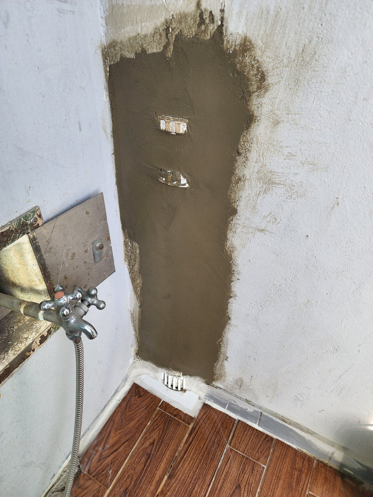
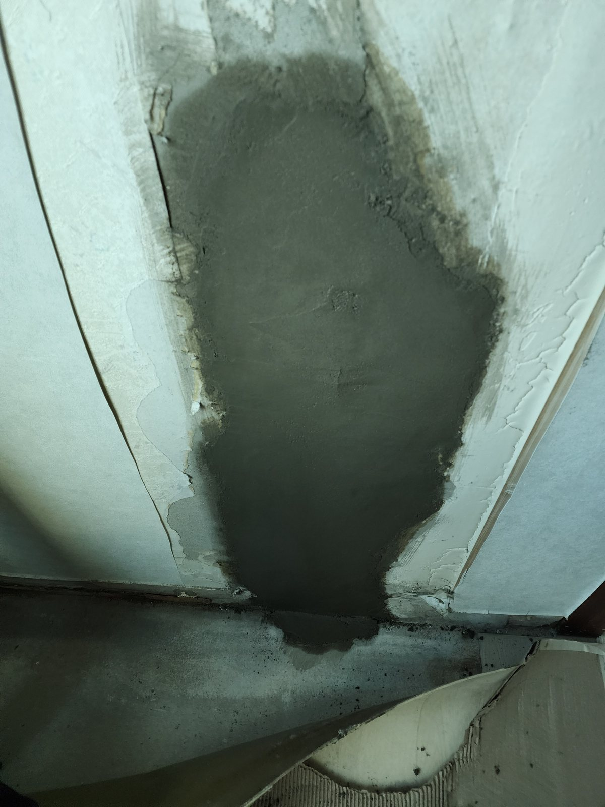

대전 법동 삼호아파트 앞베란다 우수관 방수｜벽 속 우수관을 드러내고 미장으로 메우기

현장 작업 한눈에 보기
- 현장
- 법동 삼호아파트 · 앞베란다 우수관
- 문제
- 벽 속에 묻힌 앞베란다 우수관
바닥으로 이어지는 관 입구 - 작업
- 벽을 세로로 깨어 우수관 드러내기
우수관 방수 작업
깨어 낸 자리 미장(페인트는 별도) - 결과
- 미장으로 메운 벽 사진 2장 확인
방수 자재·통수 결과·소요시간은 미기재
대전 대덕구 법동 삼호아파트 앞베란다 우수관 방수 작업입니다. 벽 속에 묻힌 우수관 자리를 세로로 깨어 열고 바닥 쪽 관 입구까지 확인한 뒤, 작업을 마치고 깨어 낸 자리를 미장으로 메웠습니다. 페인트 마감은 따로 진행합니다. 실제 사진 5장으로 소개합니다.
1. 작업 전 앞베란다
대전 대덕구 법동 삼호아파트 앞베란다에서 우수관 방수 작업을 했습니다. 2026년 11월 16일 사진을 순서대로 소개합니다.
작업 전 앞베란다입니다. 이 집 우수관은 수도꼭지 옆 벽 속에 묻혀 있어 겉으로는 보이지 않았습니다. 벽 속 관은 밖에서 상태를 볼 수 없어, 손보려면 벽을 열어야 합니다.

2. 벽 속 우수관 드러내기
수도꼭지 옆 벽을 관이 지나는 길을 따라 세로로 좁게 깨어, 안에 묻힌 우수관을 드러냈습니다.
3. 바닥 쪽 관 입구
우수관 아래쪽을 열어 바닥으로 이어지는 관 입구까지 확인했습니다. 앞베란다 우수관은 위층에서 내려온 빗물이 지나가는 길이라, 바닥 쪽 연결 부분까지 함께 봅니다.

4. 미장으로 메우기
우수관 방수 작업을 마친 뒤, 깨어 낸 벽 자리를 미장으로 다시 메웠습니다.

5. 미장 마감과 페인트
미장으로 메운 자리를 다른 각도에서 본 모습입니다. 미장이 마른 뒤 페인트 마감은 따로 진행합니다.

6. 확인한 범위와 상담 안내
이번 기록은 사진과 작업 메모로 확인되는 범위입니다. 방수 자재와 바른 범위, 통수 결과, 작업 시간은 자료가 없어 적지 않았습니다.
베란다 벽 모서리에 물 자국이 번지거나 칠이 들뜨는 경우, 또는 아랫집 천장에 물 자국이 보이면 우수관이 지나는 벽과 물 자국을 함께 찍어 상담해 주세요.